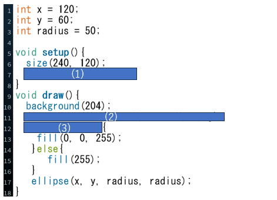

問題のコード
プログラム実行画面
問題文
上図は,マウスの位置が円の内側にあるかを判定し,内側だった場合,円を青色にするプログラムです.
(1)円の幅と高さを記入する3番目と４番目のパラメーターが,円の半径となるように指定してください.
(2)マウスの座標と円の中心の座標の２点間の距離を関数を使って求めてください.
(3)マウスの位置が円の内側かどうかを判定するプログラムを埋めてください.
(1)円の描画モードを指定する関数 ellipseMode(); また,この場合はRADIUSを使う.
(2)２点間の距離を求める関数 dist();
(3)変数dとradiusの大小を比較することによって,円の内側か外側を判定することができる.
解答欄
(1)ellipseMode(RADIUS);
(2)float d = dist(mouseX, mouseY, x, y);
(3)if(d < radius)
解説欄